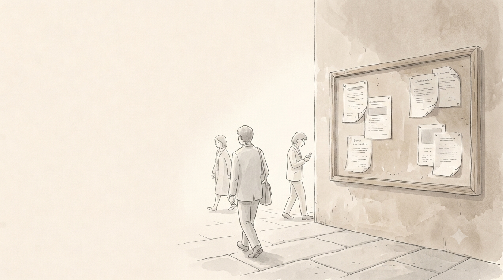
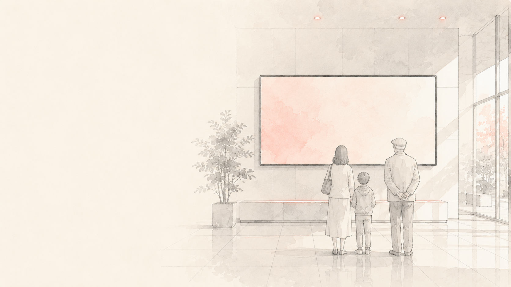
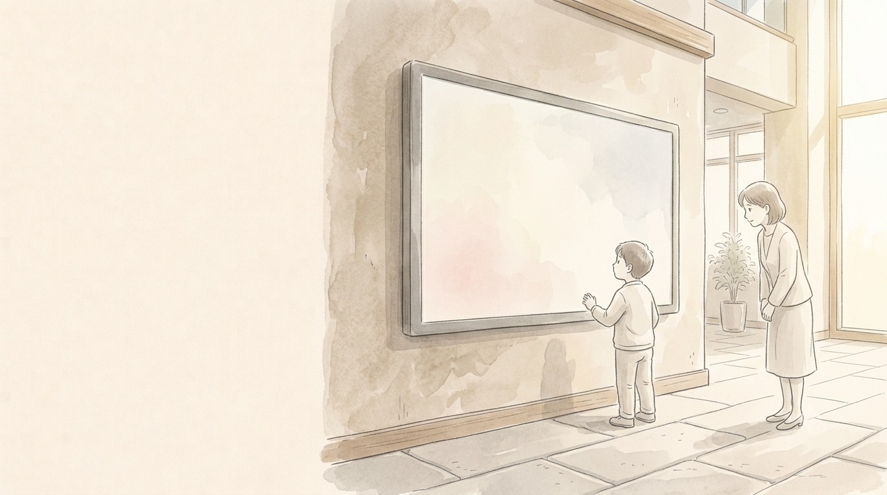
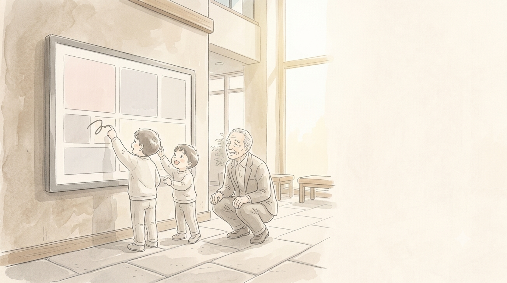
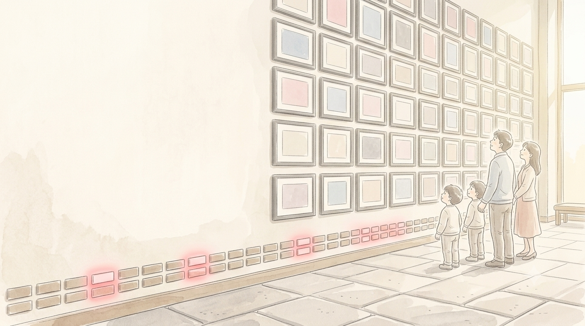
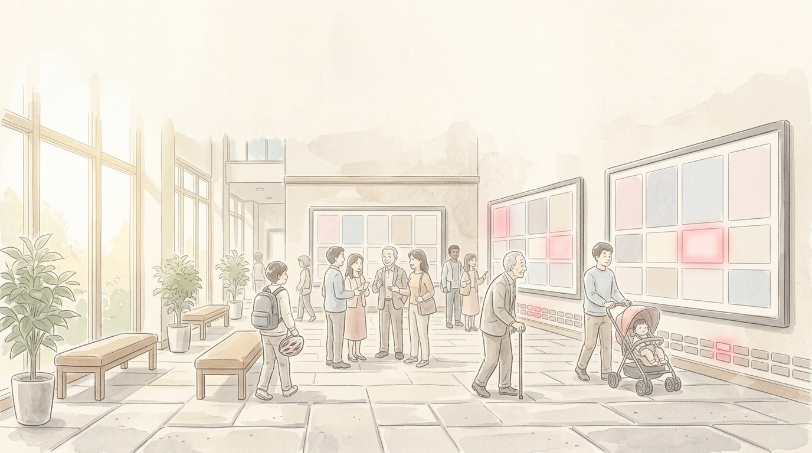
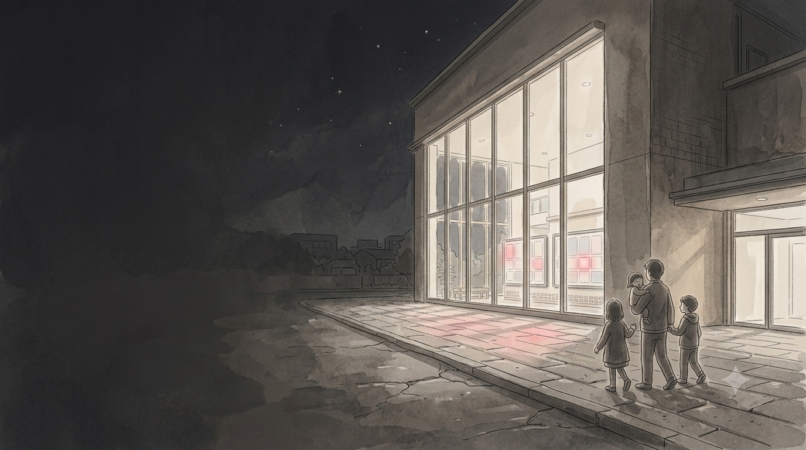

EXE MATE 株式会社 ｜ 中間市 ご提案
参加型デジタルサイネージ構想
NAKAMATE!
中間市を『知る・遊ぶ・描く・伝える・応援する』。
まちの魅力を、市民が参加したくなる体験へ。
地域交流センター設置想定 ｜ 2026.07
01 / 13

現状
魅力と参加が、
まだつながっていない
いま
「見る情報」で止まっている
100年のポンプ場、市民と企業、子どもたち。伝えたい魅力は、すでに中間市にある。
課題
参加への導線がない
広報紙や掲示板だけでは、まちづくりに関わるきっかけになりにくい。
02 / 13
全体像 NAKAMATE! の5つの機能
まちの魅力を、参加の入口に変える。
01
知る
風景・イベント・建造物にふれる
02
遊ぶ
「もう一回」が、まちを知る入口に
03
描く
「また行きたい」が、触れ合いをつくる
04
伝える
作品を、家族と地域で共有する
05
応援する
「応援したい」を、壁に刻む
03 / 13

EXEの必殺技
地域交流センターの
大画面を、
まちと市民をつなぐ
入口に。
既存パッケージ imagi_mate をベースに、
短期間・低コストで立ち上げます。
04 / 13

体験メニュー
01知る
見るだけで終わらせない。
次の体験へつなぐ。
写真や紹介動画で、まちの風景・イベント・建造物にふれる。
気になった瞬間が、次の「遊ぶ」へ続く。
05 / 13

体験メニュー
02遊ぶ
カードを揃えると、
まちの物語が動き出す。
まちの物語が動き出す。
市の特徴を神経衰弱ゲームに。絵柄に応じた紹介動画が流れ、子どもの「もう一回」が学びになる。
本日ご体験いただけます
03描く
画面に直接描く。
その日の思い出を残す。
その日の思い出を残す。
マスコットをスタンプにして、画像も動き方もカスタマイズ。子どもの「また行きたい」を育てる。
本日ご体験いただけます
06 / 13
体験設計
5つの機能が、
ひとつの画面で
つながる
一度の来館で生まれた興味が、次の参加へ自然に続く設計です。
- ●見て終わらせず、その場で遊び、描ける
- ●つくったものが展示され、家族と地域に届く
- ●応援が見えることが、次の来館の理由になる
07 / 13

参加と応援
04伝える
子どもの作品を、
地域のギャラリーへ。
地域のギャラリーへ。
集めた作品を管理画面から反映。テーマやイベントごとに一覧表示し、家族や地域と共有します。
05応援する
市民と企業の名前を、
未来へ刻む。
未来へ刻む。
サポーターとスポンサーをレンガの壁に表示。企業スポンサーはCM動画も流せ、QRから参加できます。
08 / 13
市民の参加 × 地域企業の応援
応援が見えると、
参加は続いていく。
名前が刻まれ、作品が見られ、次の来館の理由になる。
「応援したい」を、まちの共通体験へ変えます。
名前が、まちに残る
刻まれた名前は消えず、いつでも会いに行ける。
作品が、人に見られる
子どもの表現が、家族と地域に届く。
次に来る理由になる
「どうなったかな」が、次の来館をつくる。
09 / 13

設置想定 ｜ 地域交流センター
用事がなくても、
立ち寄りたくなる場所へ。
子育て世代、高齢者、地域企業が日常的に交わる場所だからこそ、参加の入口になります。
子育て世代
親子で立ち寄り、遊びながら学ぶ
高齢者
日常の立ち寄り先で、まちの今を知る
地域企業
まちを応援し、その姿を市民に届ける
10 / 13
立ち上げの進め方 スケジュール案
小さく始めて、体験しながら育てる。
MONTH 1
体験内容・
設置条件の確認
設置条件の確認
どの体験をどこに置くか、電源・通信・設置場所を市と確認する。
MONTH 2
画面・
コンテンツの準備
コンテンツの準備
中間市の写真・動画・カードなど、画面に載せる中身をそろえる。
MONTH 3
設置・試行・
振り返り
振り返り
実際に置いて使っていただき、反応を見ながら整える。
この進め方の狙い 最初から完成させず、実際の反応を見ながら中身を足していきます。市の負担を小さく始められ、使われる形に育てられます。
11 / 13
費用
必要な範囲を、
一緒に定めます。
設置環境、必要なコンテンツ、運用の役割分担を確認し、構想に沿った範囲でご提示します。
別途
お見積り
お見積り
確認してから、お出しします
・設置場所と台数、電源・通信の条件
・用意するコンテンツの範囲
・運用を誰が担うかの役割分担
・用意するコンテンツの範囲
・運用を誰が担うかの役割分担
12 / 13

次の一手
まちの魅力 × 市民の参加 × 継続的な応援
中間市の
「また来たい」を
つくる。
次回、実機デモを起点に協議する
「遊ぶ」「描く」を実際に体験いただき、地域交流センターでの最初の体験を一緒に具体化します。
EXE MATE 株式会社 https://exemate.co.jp/
13 / 13